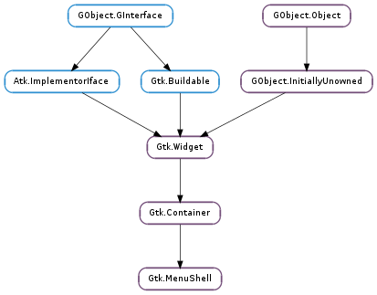

| Subclasses: | Gtk.MenuBar, Gtk.Menu |
|---|
| activate_item(menu_item, force_deactivate) | |
| append(child) | |
| bind_model(model, action_namespace, with_separators) | |
| cancel() | |
| deactivate() | |
| deselect() | |
| get_parent_shell() | |
| get_selected_item() | |
| get_take_focus() | |
| insert(child, position) | |
| prepend(child) | |
| select_first(search_sensitive) | |
| select_item(menu_item) | |
| set_take_focus(take_focus) |
| Name | Type | Flags | Description |
|---|---|---|---|
| take-focus | bool | r/w | A boolean that determines whether the menu grabs the keyboard focus |
| Name | Parameters | Return | Description |
|---|---|---|---|
| activate-current | bool | An action signal that activates the current menu item within the menu shell. | |
| cancel | An action signal which cancels the selection within the menu shell. Causes the Gtk.MenuShell ::selection-done signal to be emitted. | ||
| cycle-focus | Gtk.DirectionType | A keybinding signal which moves the focus in the given direction. | |
| deactivate | This signal is emitted when a menu shell is deactivated. | ||
| insert | Gtk.Widget, int | The ::insert signal is emitted when a new Gtk.MenuItem is added to a Gtk.MenuShell. A separate signal is used instead of Gtk.Container ::add because of the need for an additional position parameter. The inverse of this signal is the Gtk.Container ::removed signal. | |
| move-current | Gtk.MenuDirectionType | An keybinding signal which moves the current menu item in the direction specified by direction. | |
| move-selected | int | bool | The ::move-selected signal is emitted to move the selection to another item. |
| selection-done | This signal is emitted when a selection has been completed within a menu shell. |
| Name | Type | Access |
|---|---|---|
| container | Gtk.Container | r |
Bases: Gtk.Container
A Gtk.MenuShell is the abstract base class used to derive the Gtk.Menu and Gtk.MenuBar subclasses.
A Gtk.MenuShell is a container of Gtk.MenuItem objects arranged in a list which can be navigated, selected, and activated by the user to perform application functions. A Gtk.MenuItem can have a submenu associated with it, allowing for nested hierarchical menus.
Terminology
A menu item can be “selected”, this means that it is displayed in the prelight state, and if it has a submenu, that submenu will be popped up.
A menu is “active” when it is visible onscreen and the user is selecting from it. A menubar is not active until the user clicks on one of its menuitems. When a menu is active, passing the mouse over a submenu will pop it up.
There is also is a concept of the current menu and a current menu item. The current menu item is the selected menu item that is furthest down in the hierarchy. (Every active menu shell does not necessarily contain a selected menu item, but if it does, then the parent menu shell must also contain a selected menu item.) The current menu is the menu that contains the current menu item. It will always have a GTK grab and receive all key presses.
| Parameters: |
|
|---|
Activates the menu item within the menu shell.
| Parameters: | child (Gtk.Widget) – The Gtk.MenuItem to add |
|---|
Adds a new Gtk.MenuItem to the end of the menu shell’s item list.
| Parameters: |
|
|---|
Establishes a binding between a Gtk.MenuShell and a Gio.MenuModel.
The contents of shell are removed and then refilled with menu items according to model. When model changes, shell is updated. Calling this function twice on shell with different model will cause the first binding to be replaced with a binding to the new model. If model is None then any previous binding is undone and all children are removed.
with_separators determines if toplevel items (eg: sections) have separators inserted between them. This is typically desired for menus but doesn’t make sense for menubars.
If action_namespace is non-None then the effect is as if all actions mentioned in the model have their names prefixed with the namespace, plus a dot. For example, if the action “quit” is mentioned and action_namespace is “app” then the effective action name is “app.quit”.
This function uses Gtk.Actionable to define the action name and target values on the created menu items. If you want to use an action group other than “app” and “win”, or if you want to use a Gtk.MenuShell outside of a Gtk.ApplicationWindow, then you will need to attach your own action group to the widget hierarchy using Gtk.Widget.insert_action_group (). As an example, if you created a group with a “quit” action and inserted it with the name “mygroup” then you would use the action name “mygroup.quit” in your Gio.MenuModel.
For most cases you are probably better off using Gtk.Menu.new_from_model () or Gtk.MenuBar.new_from_model () or just directly passing the Gio.MenuModel to Gtk.Application.set_app_menu () or gtk_application_set_menu_bar().
An action signal which cancels the selection within the menu shell. Causes the Gtk.MenuShell ::selection-done signal to be emitted.
This signal is emitted when a menu shell is deactivated.
Deselects the currently selected item from the menu shell, if any.
| Returns: | the parent Gtk.MenuShell |
|---|---|
| Return type: | Gtk.Widget |
Gets the parent menu shell.
The parent menu shell of a submenu is the Gtk.Menu or Gtk.MenuBar from which it was opened up.
| Returns: | the currently selected item |
|---|---|
| Return type: | Gtk.Widget |
Gets the currently selected item.
| Returns: | True if the menu shell will take the keyboard focus on popup. |
|---|---|
| Return type: | bool |
Returns True if the menu shell will take the keyboard focus on popup.
| Parameters: |
|
|---|
The ::insert signal is emitted when a new Gtk.MenuItem is added to a Gtk.MenuShell. A separate signal is used instead of Gtk.Container ::add because of the need for an additional position parameter.
The inverse of this signal is the Gtk.Container ::removed signal.
| Parameters: | child (Gtk.Widget) – The Gtk.MenuItem to add |
|---|
Adds a new Gtk.MenuItem to the beginning of the menu shell’s item list.
| Parameters: | search_sensitive (bool) – if True, search for the first selectable menu item, otherwise select nothing if the first item isn’t sensitive. This should be False if the menu is being popped up initially. |
|---|
Select the first visible or selectable child of the menu shell; don’t select tearoff items unless the only item is a tearoff item.
| Parameters: | menu_item (Gtk.Widget) – The Gtk.MenuItem to select |
|---|
Selects the menu item from the menu shell.
| Parameters: | take_focus (bool) – True if the menu shell should take the keyboard focus on popup |
|---|
If take_focus is True (the default) the menu shell will take the keyboard focus so that it will receive all keyboard events which is needed to enable keyboard navigation in menus.
Setting take_focus to False is useful only for special applications like virtual keyboard implementations which should not take keyboard focus.
The take_focus state of a menu or menu bar is automatically propagated to submenus whenever a submenu is popped up, so you don’t have to worry about recursively setting it for your entire menu hierarchy. Only when programmatically picking a submenu and popping it up manually, the take_focus property of the submenu needs to be set explicitely.
Note that setting it to False has side-effects:
If the focus is in some other app, it keeps the focus and keynav in the menu doesn’t work. Consequently, keynav on the menu will only work if the focus is on some toplevel owned by the onscreen keyboard.
To avoid confusing the user, menus with take_focus set to False should not display mnemonics or accelerators, since it cannot be guaranteed that they will work.
See also Gdk.keyboard_grab ()